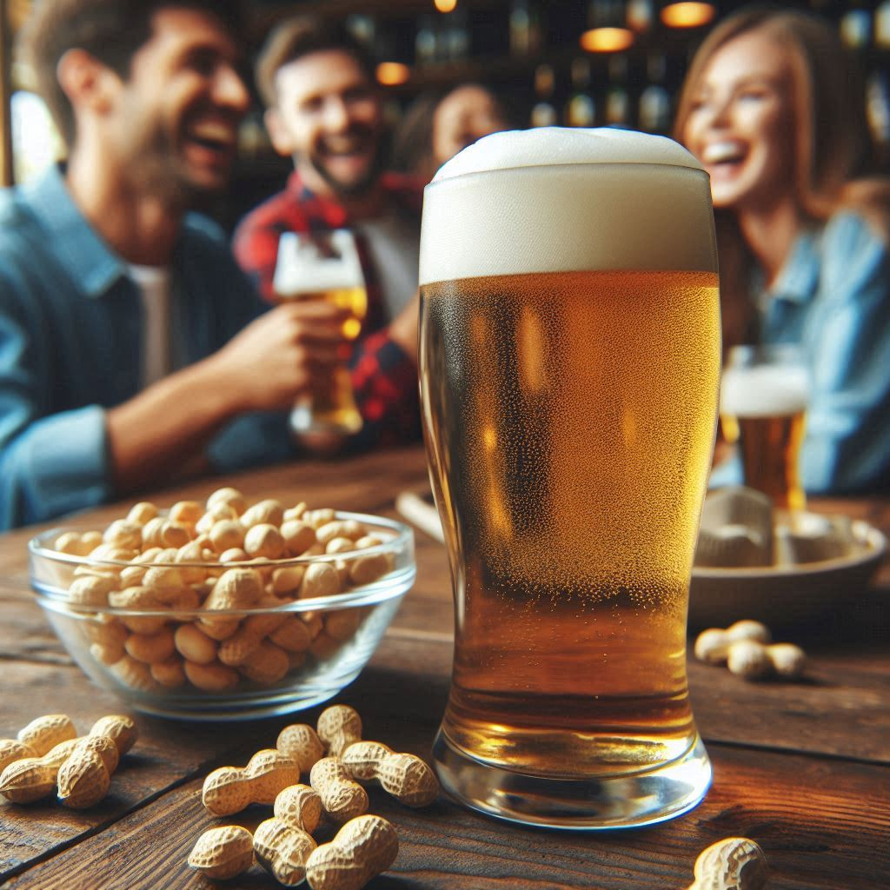
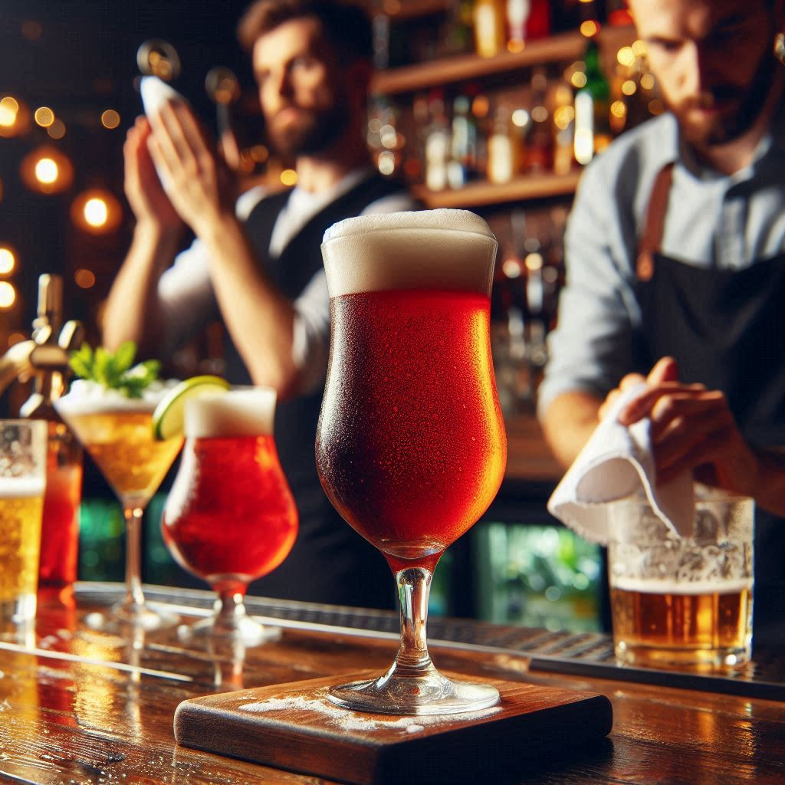
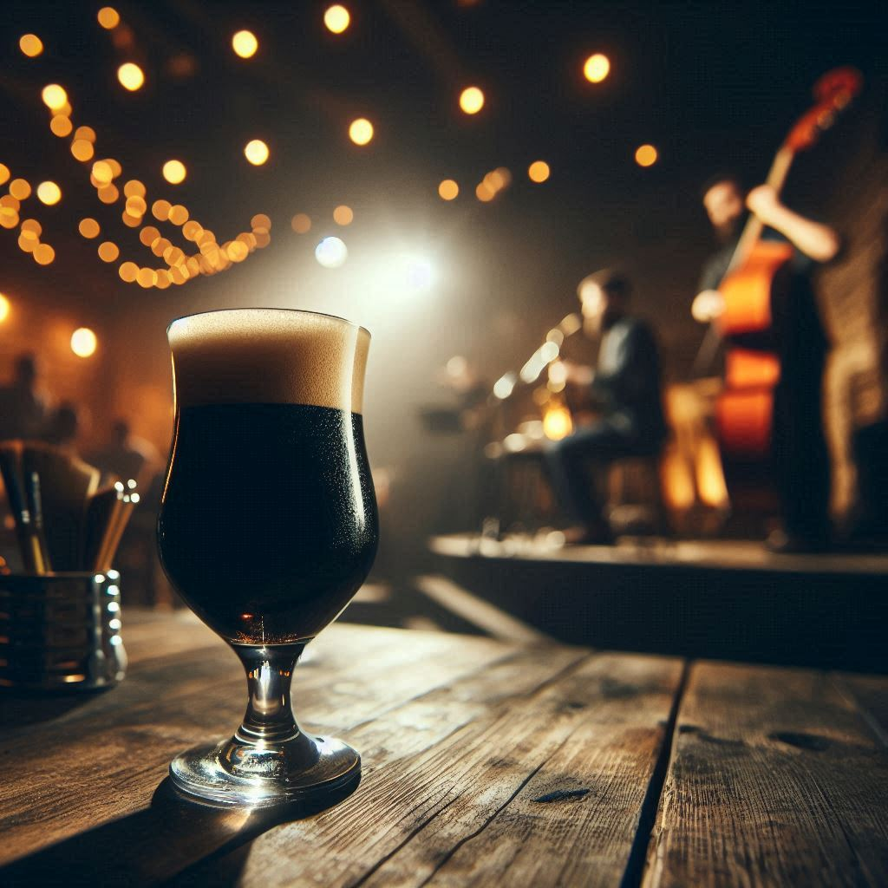
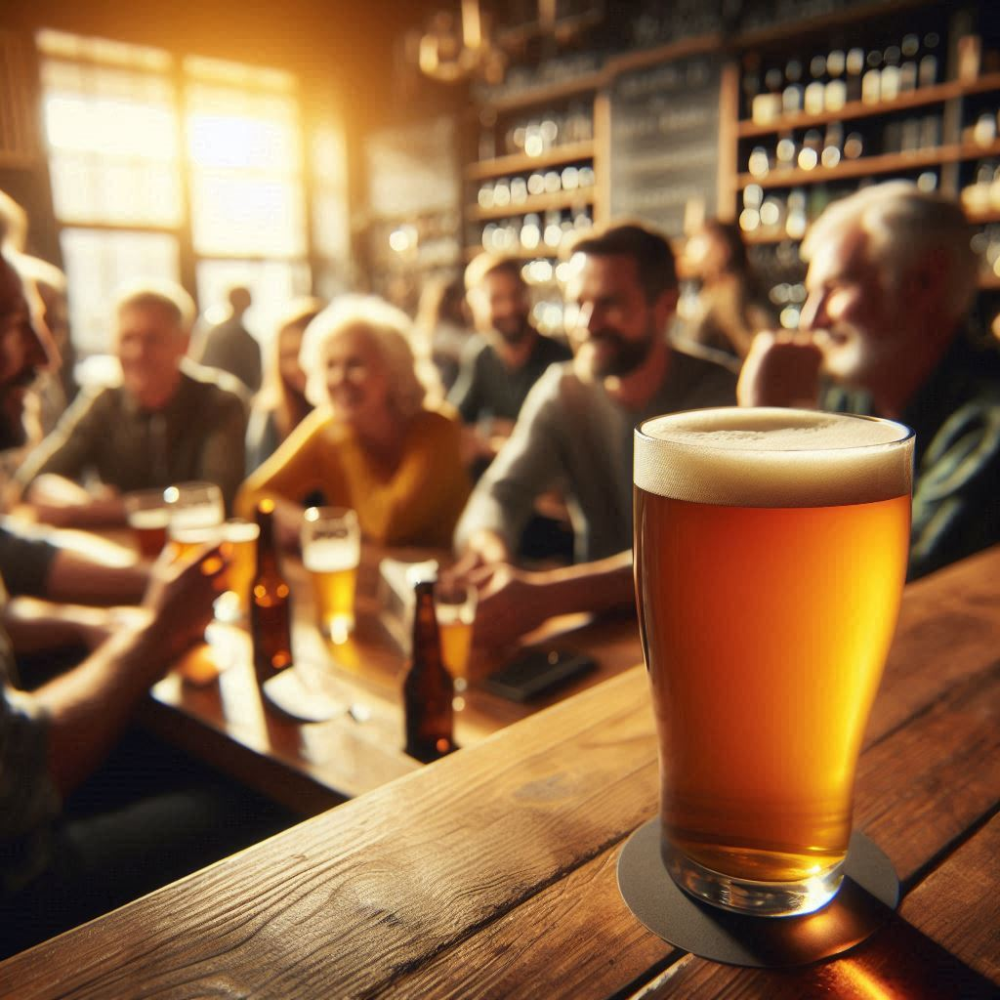
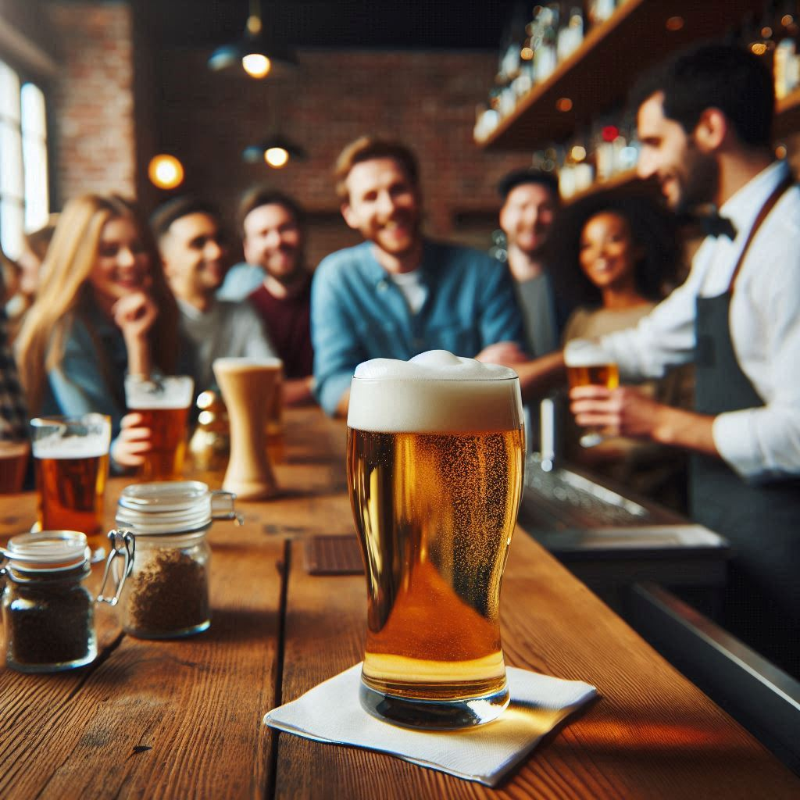
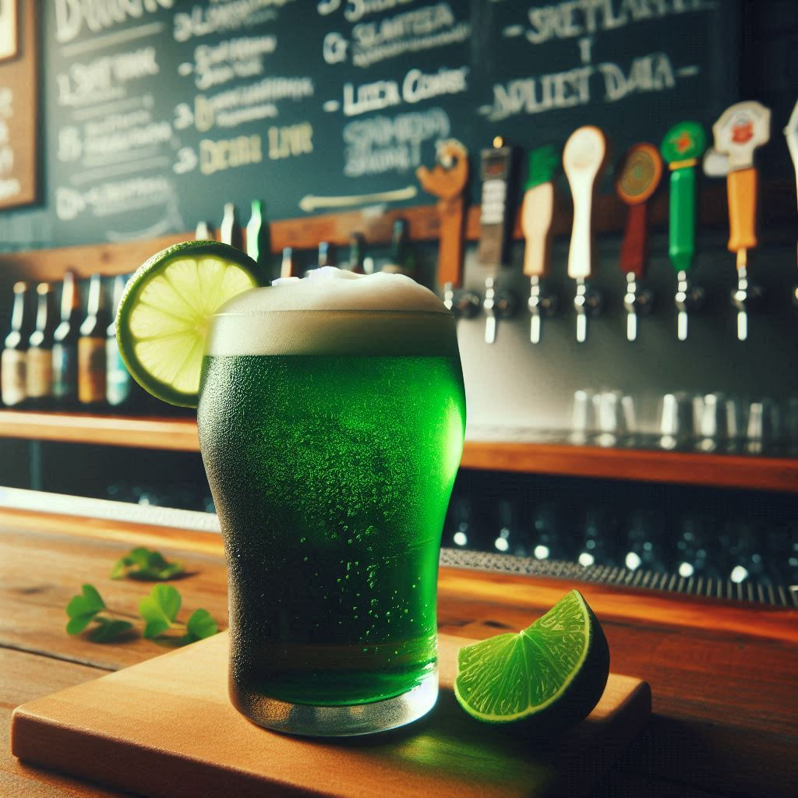

Estilos de Cerveza Artesanales
En Russell Beer Pub celebramos la pasión por las cervezas artesanales, ofreciendo una cuidada selección de sabores únicos y aromas cautivadores. Cada una de nuestras cervezas es elaborada con ingredientes de la más alta calidad, reflejando la esencia de la cultura cervecera. Acompáñanos en este recorrido por nuestras cervezas, donde la tradición y la innovación se encuentran en cada sorbo. ¡Salud!





